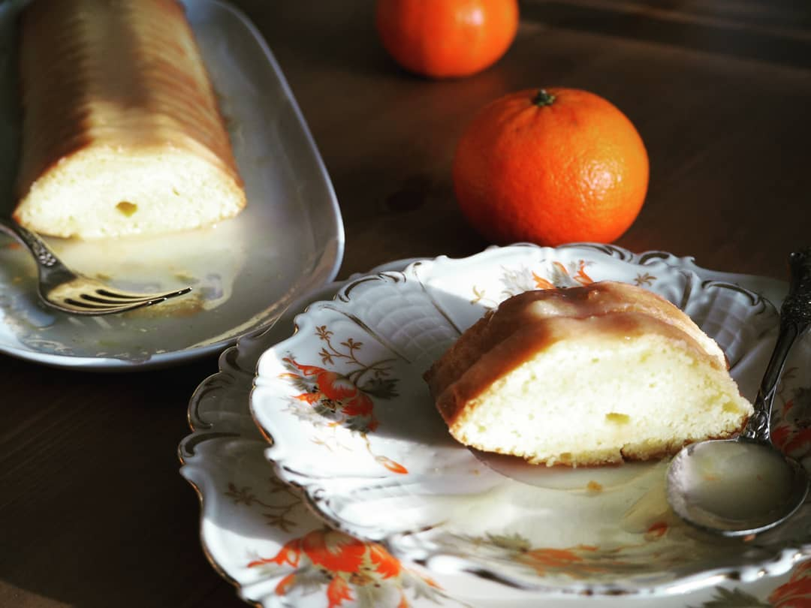

Pomarančové rezy podľa @magicke.pecenie — Normy Jedál
Na blogu je novy clanok - recept na pomarancove rezy z r. 1940. Neohuria sice po estetickej stranke, no o to lepsie chutia. Takze ak vam nejaky ten pomaranc este ostal z Vianoc, tak tu mate moznost ako ho chutne minut. Krasny vikend. BB (@toile_de_jouy ) #dnesjem #dnespeciem #daybyme #pomarancoverezy #1940 #instafood #bratislava #eva #recept #kolac #bbpecie #magickekapkejky #magickepecenie #magiccupcakes #peceniejezabava